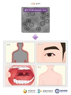
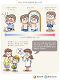
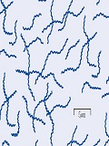

-
장티푸스
장티푸스의 예방을 위해서는 개인위생 및 철저한 환경위생이 가장 중요하며, 만성 보균자에 대한 관리(2년간 보균검사 실시)가 중요하겠습니다. 또한 고 위험군에 대해서는 예방접종을 실시하기도 합니다.
-
A형간염
공중 보건위생 : 손씻기, 상하수도 정비, 식수원 오염방지, 식품 및 식품 취급자 위생관리 등이 중요합니다.
-
세균성이질
세균성이질을 예방하기 위해서는 배변 후 손 씻기가 가장 중요하고, 유행 시 예방적 항생제의 사용은 추천되지 않습니다.
-
파상풍
예방접종 완료여부와 상처의 오염 정도에 따라 결정하게 됩니다. 과거 파상풍 예방접종을 3회 이상 시행한 경우에는 작고 깨끗한 상처의 경우 마지막 접종 후 10년이 지난 경우에만 Td를 1회 접종하며 오염되었거나 큰 상처의 경우에는
-

홍역
홍역은 전세계적으로 유행하는 급성 발진성 바이러스 질환으로 백신의 개발 이후 선진국에서는 그 발생이 현저히 줄었으나 개발도상국가에서는 아직도 흔히 발생하며, 특히 소아에서 생명을 위협하는 주요한 질병으로 남아있습니다. 홍역 바이러스는 인간만이 유일한 숙주이며 호흡기 분비물 등의 비말(droplet)에 의하거나 오염된 물건을 통하여 호흡기로 감염됩니다.
-
유행성이하선염
볼거리(이하선염)나 다른 증상 발현 후 5일까지 표준격리 및 비말 격리해야 하며, 환자의 타액이나 호흡기 분비물로 오염된 물품의 소독이 필요합니다.
-

수두
수두 예방접종은 우리나라에서 12-15개월 영아의 기본접종 백신으로 권장됩니다. 면역의 증거가 없는 연장아와 청소년은 자연 감염 후 합병증의 빈도가 더 높다는 점, 수두로 인한 가족 및 사회에 미치는 비용 효과, 백신의 효과 및 안전성 등을 고려하여 접종하도록 권장합니다.
-
결핵
결핵은 예방이 가능한 질병입니다. 결핵의 예방은 감염이 발생하기 전에 시작되는 1차 예방과 결핵균에 감염이 된 후 활동성 결핵으로 진행하는 것을 막는 2차 예방으로 나누어 볼 수 있습니다.
-
말라리아
여행을 떠나기 1개월 전에 의사를 방문합니다. 여행할 지역이 말라리아 유행지역인지, 예방약 복용이 필요한 지역인지 여행의학 전문가와 출국 전에 상의합니다. 모든 말라리아 예방의 기본은 모기에 물리지 않는 것이므로 이에 대한 예방법을 전문가와 상의합니다.
-
수막구균성수막염
수막구균 감염 고위험군에 한하여 예방접종
-
쯔쯔가무시증
진드기에 물리지 않는 것이 쯔쯔가무시병을 예방하는 최선의 방법이므로 진드기와 접촉을 피하기 위해 풀밭에 앉거나 누워서는 안되며, 빨래 등을 풀밭에 널지 말아야 합니다.
-
렙토스피라증
렙토스피라증의 예방은 여러가지 방법을 병합해야 하며, 이 방법들을 정확하게 적용하면, 렙토스피라 균 오염이 심한 지역에서 조차 감염의 위험을제로로 낮추는 것이 가능할 수 있습니다.
-
신증후군출혈열
풀밭 위에 옷을 벗어 놓거나 눕지 않고, 작업 중 풀밭에서 용변을 보지 않습니다. 휴식이나 새참 먹을 때 돗자리를 펴서 앉고, 사용한 돗자리는 세척하여 햇볕에 말려서 사용합니다. 작업 및 야외활동 후 샤워나 목욕을 하고, 작업복은 세탁을 합니다.
-

매독
감염의 위험이 높은 사람과의 성접촉을 피하고 콘돔을 사용해야 합니다. 선천성 매독을 예방하기 위해 모든 임신부를 대상으로 매독혈청검사 시행하는 것이 추천됩니다.
-

폐렴
폐렴 발생의 약 1/3은 흡연과 관계가 있습니다. 따라서 금연이 폐렴의 예방에 아주 중요합니다. 또, 노인에서는 뇌졸중 혹은 치매 등의 질환을 가지고 있는 경우가 적지 않아 흡인의 위험성이 높습니다.